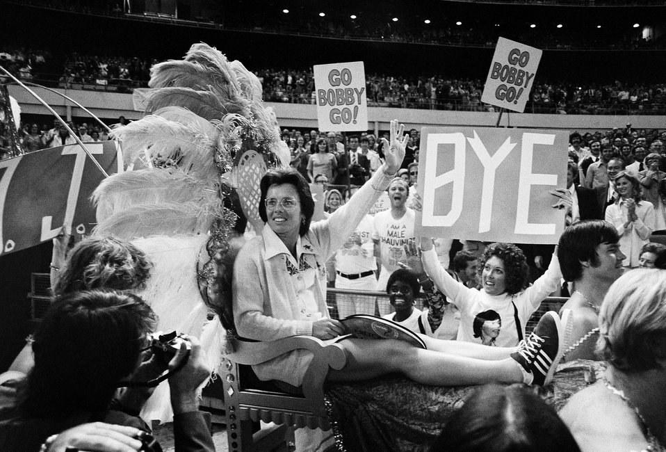
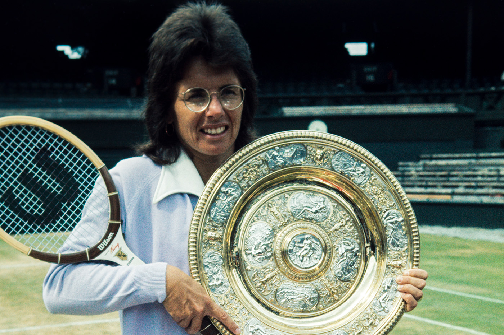

Inicio
Premios Ganados

Destacó sobre todo en las pistas de Wimbledon, en las que logró un total de veinte triunfos: seis en individuales, diez en dobles y cuatro en mixtos. También venció tres veces en el torneo de Forest Hills (las tres en individuales), cuatro en el de Roland Garros (una en individuales) y dos en los internacionales de Australia (una en individuales). Se retiró en 1982. Desde 1995 fue la capitana del equipo estadounidense de la Copa Federación.Gran dominadora de las canchas durante casi dos décadas, Billie-Jean King acreditó su maestría en todas la modalidades (individual, dobles y dobles mixtos) y fue la primera atleta en superar los 100.000 dólares de ganancias en una temporada. Como destacada fundadora de la Women Tennis Association (WTA), organización paralela a la ATP masculina, tuvo gran ascendencia sobre sus colegas y fue una de las principales luchadoras en pro de la igualdad de honorarios en el tenis femenino, contribuyendo decisivamente a incrementar su popularidad.Billie Jean King se dio el gusto de ganar al menos una vez los cuatro torneos de Grand Slam, en un derrotero triunfal que se inició en 1966 en el Abierto de Gran Bretaña y se cerró en el mismo court central del All England Lawn Tennis and Croquet Club de Londres en 1975. En esos nueve años, la estadounidense ganó seis veces Wimbledon (1966, 1967, 1968, 1972, 1973 y 1975), cuatro US Open (1967, 1971, 1972 y 1974), un Abierto de Australia (1968) y un Roland Garros (1972). Doce títulos grandes logró esta leyenda que, mientras se lucía en las canchas, iba a cambiar la historia del tenis el 20 de septiembre de 1973.
